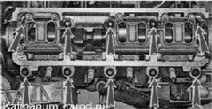
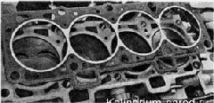
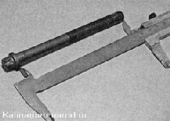
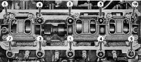

Головка блока цилиндров двигателя 1,6 л - снятие и установкаСнятие 1. Сливаем из двигателя охлаждающую жидкость. 2. Снимаем наконечники высоковольтных проводов со свечей. 3. Снимаем крышку головки блока цилиндров. 4. Снимаем шкив распределительного вала. Болты крепления головки блока доступны при установленном распределительном вале, но необходим торцовый ключ со специальной головкой. Головку блока цилиндров можно снять в сборе с ресивером и выпускным коллектором. Но если головку снимают для ее ремонта, то ее лучше предварительно разобрать. 5. Снимая корпус термостата со шпилек головки блока цилиндров. 6. Отворачиваем гайку и болт верхнего крепления задней крышки ремня привода ГРМ. 7. Ключом Тогх Е14 равномерно, в несколько приемов, отворачиваем 10 болтов крепления головки блока цилиндров. 
8. Немного оттянув в сторону заднюю крышку ремня привода ГРМ, снимаем головку блока цилиндров. 9. Снимаем прокладку головки блока цилиндров и вынимаем две направляющие втулки из посадочных мест.  Установка 1. Промываем головку блока цилиндров от грязи и отложений керосином или дизельным топливом. 2. Медицинским шприцем или грушей удаляем из резьбовых отверстий блока цилиндров (под болты крепления головки блока) остатки масла и охлаждающей жидкости. 3. Отчищаем привалочные плоскости головки и блока цилиндров от остатков старой прокладки, обезжириваем плоскости растворителем. При установке головки блока цилиндров всегда используйте новую прокладку Попадание масла на поверхность прокладки не допускается. 4. Устанавливаем направляющие втулки головки в посадочные места блока цилиндров. 5. Укладываем на блок цилиндров прокладку, при этом направляющие втулки должны войти в соответствующие отверстия прокладки. 6. Устанавливаем на блок цилиндров головку. Слегка перемещая головку из стороны в сторону, добиваемся того, чтобы направляющие втулки вошли в соответствующие отверстия головки. Повторное использование болтов крепления головки блока цилиндров допускается только в том случае, если их длина не превышает 135,5мм. 7. Штангенциркулем или слесарной линейкой измеряем длину болтов. Болты длиной более 135,5 мм заменяем. 8. Перед заворачиванием окунаем резьбовую часть болтов в моторное масло, после чего даем маслу стечь, выждав около получаса. 9. Устанавливаем в отверстия головки болты с шайбами. 10. Динамометрическим ключом затягиваем болты крепления головки (в последовательности, указанной на фото) в четыре приема: — затягиваем болты моментом 20 Н-м (2 кгс-м); — затягиваем болты моментом 69,4 - 85,7 Н-м (7,1 - 8,7 кгс-м); — доворачиваем болты на 90°; — еще раз доворачиваем болты на 90°. 11. Дальнейшую сборку выполняем в последовательности, обратной снятию. 
Последовательность затягивания болтов |